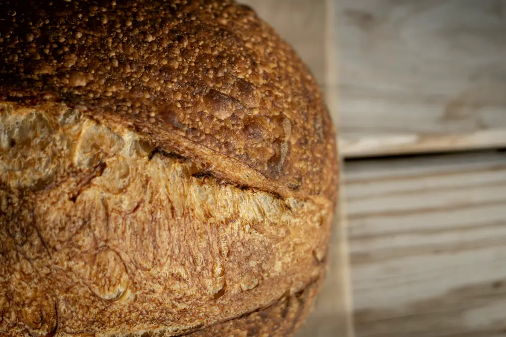
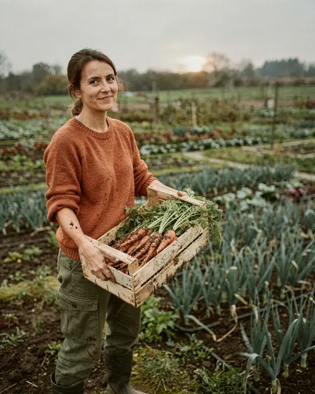
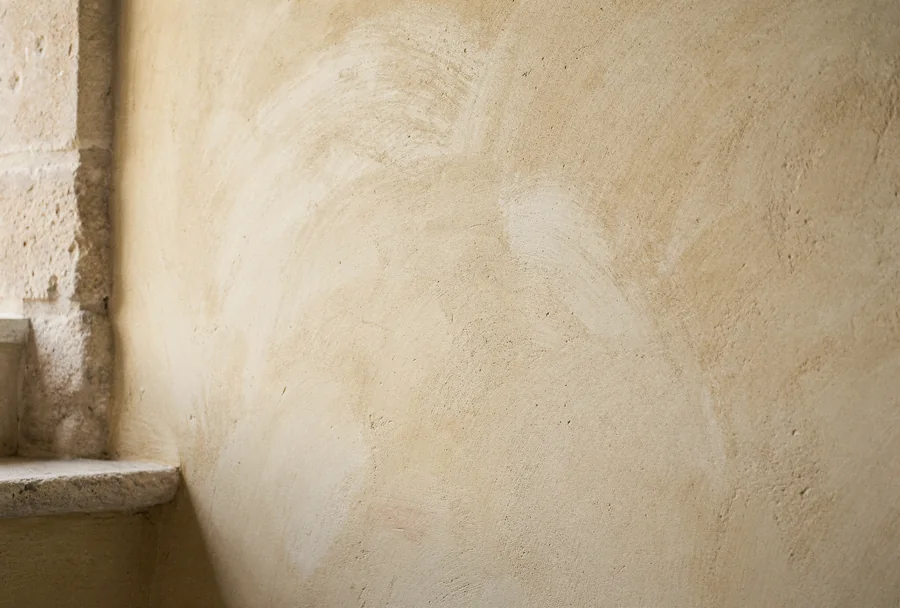
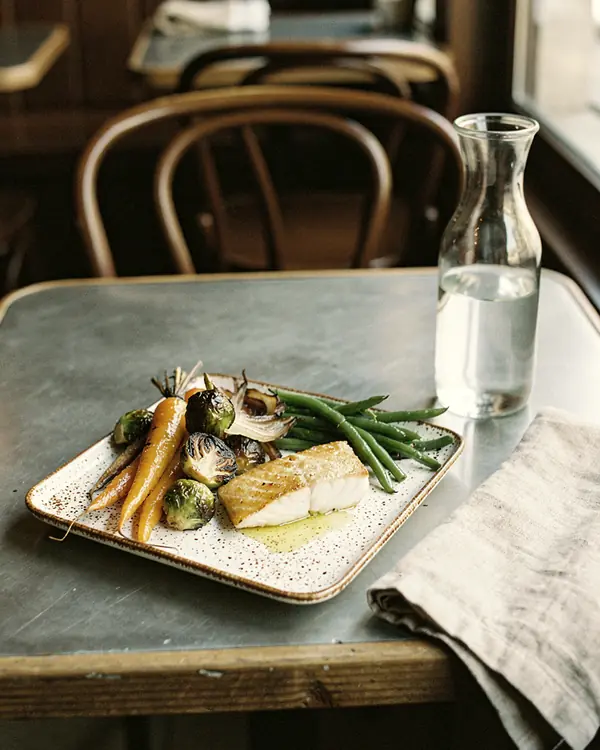
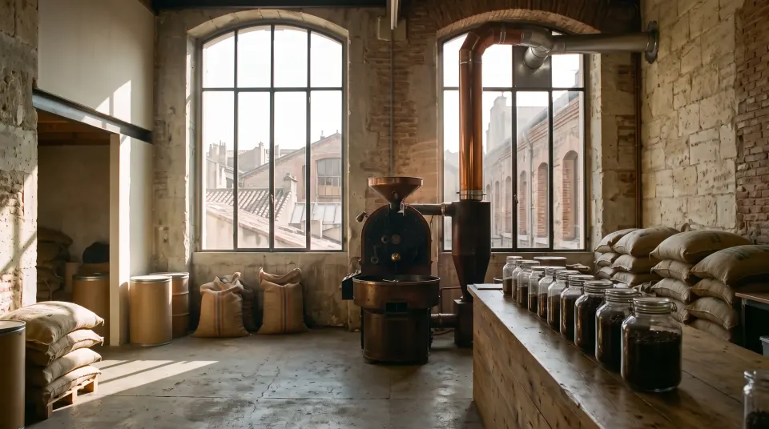

Des métiers qui se montrent
La bande défile seule et s'arrête dès qu'on la survole, qu'on y entre au clavier ou qu'on appuie sur pause. Démo : photos des exemples du plugin.

Boulangerie 
Maraîchage 
Enduit à la chaux Festival 
Céramique 
Torréfaction Coiffure
Fin de la démo.